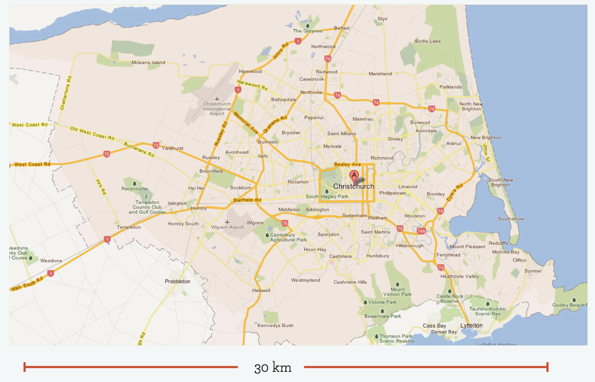

Motorized transportation has begun to shape cities since the 1950s, particularly in North America and Australia. Car-dependent cities have the characteristics of low densities of between ten to twenty people per hectare. They are typically bigger in area than transit cities and much more spread out, given that automobiles can travel up to fifty kilometers within the travel time budget. Other than urban parks, there is generally little access to agricultural and natural lands because the areas between linear corridors of the transit city have been filled with car-dependent suburbs whenever roads are established.
This form of city gained great popularity among many developed cities. Coupled with motorway infrastructure, the car enabled cities to be traversed more quickly compared to public transport. However, the consequences of automobile cities are high ecological footprints and high economic costs. Automobile cities typically use more than 1,000 liters of gasoline per person per year on mobility; transit cities use around 300 to 500 liters; and walking cities use less than 100 liters per person per year. Car- dependent cities spends around 12 to 17 percent of their household expenditure on transportation costs, compared to 5 to 8 percent in transit and walking cities (Newman & Kenworthy, 1999). The high costs are due to the space requirements for cars and the expense of their purchase and use.
Car-dependent cities also create a number of social problems. The sense of community is undermined by precluding casual interaction that occur while walking and using public transport.
To sum up, the dramatic rate of urbanization takes up more land and increases the impact on ecosystem patterns. The demands of urban population exerts greater pressure on the ecosystems outside cities - all because of the need to accommodate people’s average one-hour travel-time budget. The availability of cheap petroleum has fueled the automobile-dependent urban forms known as sprawling cities with high ecological footprints and multiple social issues.

Christchurch today has most characteristics described above. The uptake of private automobiles in the 1950s has had severe impact on existing trams, hence a dramatic fall of public transportation which is to be examined later in this section. Currently Christchurch is roughly 30km wide, which is in fact an ideal size for the transit city previously mentioned. However, despite having the advantage of a flat typography, the existing low density coupled with the transport network favours people who drive cars. This is seen as one of the many contributing factors to the lack of patronage for and public transportation and therefore a lack of advancement over the past years.